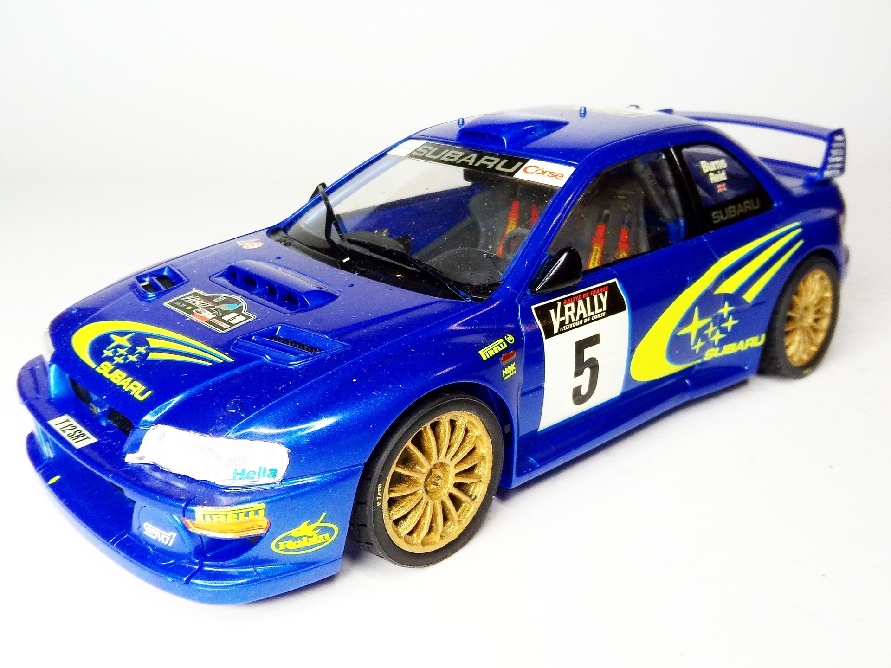
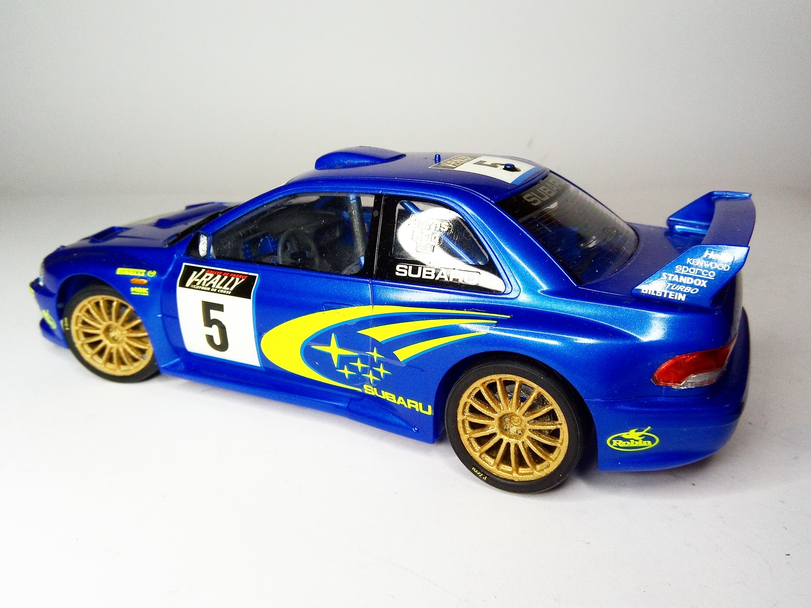

Auto e veicoli stradali · scale model archive
Subaru Impreza WRC 99
Subaru Impreza WRC 99 — Kit: Tamiya, Scale: 1/24. Subaru World Rally Team 5 (Burns/Reid) Mai 1999 Tour de Corse - Rally de France - Corse FR (Result:…

Photo gallery

English description
Subaru World Rally Team 5 (Burns/Reid) Mai 1999 Tour de Corse - Rally de France - Corse FR (Result: 7th)
Very attractive livery
#1/24 #Tamiya #WRC #Impreza
Descrizione italiana
Subaru World Rally Team 5 (Burns/Reid), maggio 1999, Tour de Corse - Rally de France, Corsica. Risultato: 7° posto. Livrea molto attraente.